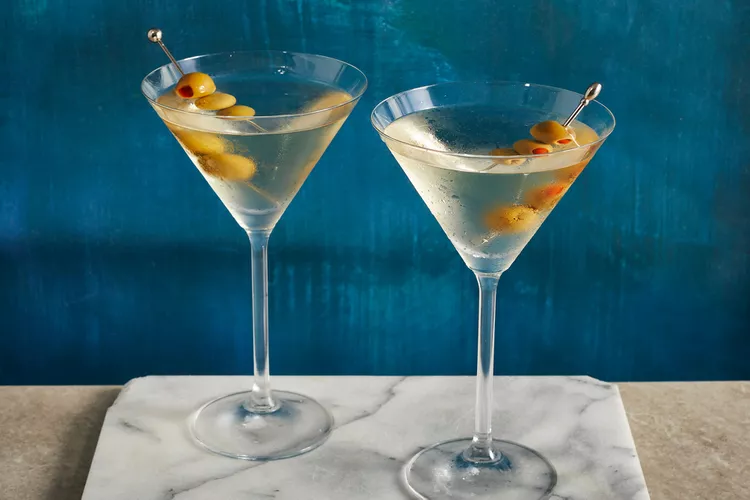

Vodka Martini Cocktail

Shaken, not stirred.
Ingredients
- Vodka
- Dry Vermouth for a floral and tart flavour
- Olives, either Castelvetrano or Spanish
Directions
- Combine the vodka and dry vermouth in a mixing glass with ice. Stir until chilled, then strain into a chilled martini glass.
- Top the cocktail with as many olives as you like (threaded onto a toothpick).